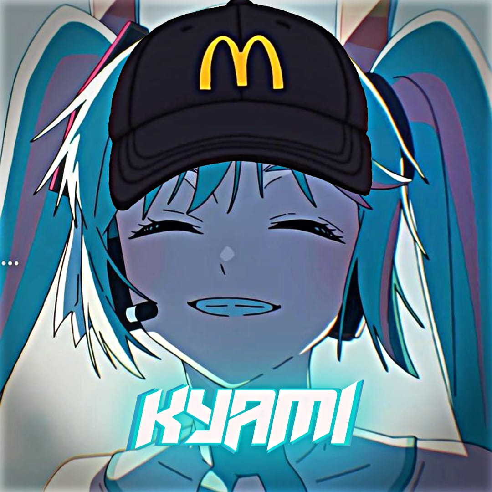

Kyami Silence
Website For Link Script Bot
@SlncKyami
GawrGura-V2
Furina X HuTao V2
Furina X HuTao V1
Fubuki-MD
Elaina-MD
Hoshino-MD
Hitori-MD
Hatsune Miku
GawrGura V1
HuTao-MD
Kayako-MD
Cerita Seorang Zuroku